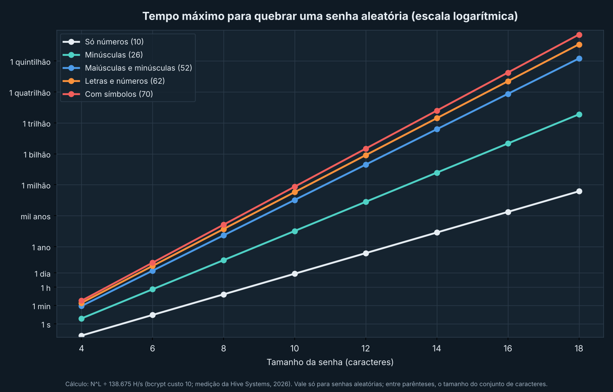

Teste uma senha de exemplo
Não digite sua senha real. Tudo acontece no seu navegador, nada é enviado.
Tempo máximo para testar todas as combinações, supondo senha aleatória e hash bcrypt roubado, a 138.675 tentativas por segundo (medição da Hive Systems, 2026). Senhas comuns caem quase de imediato.
Como o computador enxerga o que você digitou
O computador só guarda números. Cada caractere vira um número, e cada número vira uma sequência de bits. Os quatro primeiros caracteres da sua senha de teste ficam assim:
Em ASCII, a letra “a” é 97, que em binário é 01100001 e em hexadecimal é 61. Cada bit a mais dobra o número de combinações, e é por isso que senhas maiores crescem tão rápido em segurança.
De onde vem a segurança digital
- Cerca de 50 a.C. A cifra de César troca cada letra por outra, três posições adiante.
- 1940 A máquina Enigma cifra mensagens militares, e a equipe de Alan Turing trabalha para quebrá-la.
- 1945 O ENIAC, um dos primeiros computadores eletrônicos, inicia a era da computação digital.
- 1971 O programa Creeper se espalha pela ARPANET e é considerado um dos primeiros vírus de rede.
- 2018 O Brasil aprova a Lei Geral de Proteção de Dados (LGPD).
A cor do projeto, em números
Uma cor na tela são três números de 0 a 255 (vermelho, verde e azul). Cada número cabe em 8 bits e pode ser escrito em hexadecimal.
Um aviso sonoro, em bytes
Um som digital é uma lista de medidas da onda, feitas muitas vezes por segundo. Veja quanto espaço um alerta de segurança ocupa sem compressão:
Orçamento: quanto custa se proteger
Dois itens para quem quer sair do básico: um gerenciador de senhas (cobrado em dólar) e uma chave física de segurança comprada em parcelas.
Atualize a cotação do dólar antes de apresentar. A depreciação é linear: o valor da chave dividido pelos anos de uso.
Checklist de proteção
Cada medida tem uma categoria. Os filtros combinam condições com E: só aparece o que for gratuito E ainda não estiver feito.
Dados em CSV (copie e cole em um arquivo .csv para usar no Datawrapper):
Infográfico: tamanho da senha × tempo estimado para quebrar
Escolha o tamanho da senha para comparar as estimativas da tabela. As barras usam escala logarítmica, pois os tempos vão de segundos a períodos extremamente longos.
Compare os tipos de senha
Fonte: dados_senha.csv, calculado com a taxa medida pela Hive Systems (2026).
Comparação visual: todas as composições
Gráfico gerado a partir de dados_senha.csv. Cada linha é um tipo de senha, e o eixo vertical é logarítmico: cada marca é muito maior que a anterior.

Fonte: cálculo próprio com os parâmetros da Hive Systems (2026): bcrypt de custo 10 e 138.675 tentativas por segundo. NESKEY, C. Are your passwords in the green. Hive Systems, 14 jul. 2026. hivesystems.com.
Como o projeto foi feito
A tabela resume a matriz de articulação. O detalhamento, com as evidências, está no memorial em LaTeX.
| Bloco | Onde aparece neste projeto |
|---|---|
| História | Linha do tempo da segurança digital |
| Binário e bases | Senha convertida em binário e hexadecimal |
| Hardware | [Descrever o computador usado e como ele afetou o trabalho] |
| Luz | Paleta de cores em RGB, binário e hexadecimal |
| Áudio | Cálculo do tamanho do aviso sonoro |
| LaTeX | Memorial com figuras, tabelas, referências e descrição do problema |
| Planilhas | Orçamento com dólar, depreciação e juros |
| Operadores lógicos | Regras da senha e filtros do checklist |
| CSV | Dados do checklist exportados em CSV |
| Infográfico | Gráfico de tamanho da senha e tempo de quebra |
| Planejamento | Mapa mental, Trello e notas no Obsidian |
Uso de IA no projeto
A IA foi utilizada para:
- Construção do site, incluindo estilização, formatação e funcionamento dos programas em JavaScript.
- Realização de correções e melhorias básicas.
- Cálculo da tabela de tempos de quebra e geração do gráfico, a partir dos parâmetros publicados pela Hive Systems.